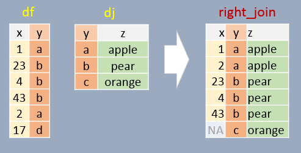

| dplyr |
|---|
| 1.1.4 |
12 Joining Data Tables
We can use dplyr’s join operations to join elements from one table to another table. Four such functions (with differing behaviors) are left_join, right_join, inner_join, and full join.
To demonstrate these functions, we’ll be joining two dataframes: df and dj. Let’s first create the df dataframe.
library(dplyr)
df <- data.frame( x = c(1, 23, 4, 43, 2, 17),
y = c("a", "b", "b", "b", "a", "d"),
stringsAsFactors = FALSE)
df x y
1 1 a
2 23 b
3 4 b
4 43 b
5 2 a
6 17 dNext, let’s create the dj dataframe.
dj <- data.frame( z = c("apple", "pear", "orange"),
y = c("a", "b", "c"),
stringsAsFactors = FALSE)
dj z y
1 apple a
2 pear b
3 orange cIn the examples that follow, we will join both tables by the common column y. Note that the column names do not need to match (see note at the bottom of this page).
12.1 Left join
In this example, if a join element in df does not exist in dj, NA will be assigned to column z. In other words, all elements in df will exist in the output regardless if a matching element is found in dj. Note that the output is sorted in the same order as df (the left table).
left_join(df, dj, by="y") x y z
1 1 a apple
2 23 b pear
3 4 b pear
4 43 b pear
5 2 a apple
6 17 d <NA>
12.2 Right join
If a join element in df does not exist in dj, that element is removed from the output. A few additional important notes follow:
- All elements in
djappear at least once in the output (even if they don’t have a match indfin which case anNAvalue is added), - The output table is sorted in the order in which the
yelements appear indj. - Element
ywill appear as many times as there matchingys indf.
right_join(df, dj, by="y") x y z
1 1 a apple
2 23 b pear
3 4 b pear
4 43 b pear
5 2 a apple
6 NA c orange
12.3 Inner join
In this example, only matching elements in both df and dj are saved in the output. This is basically an “intersection” of both tables.
inner_join(df, dj, by="y") x y z
1 1 a apple
2 23 b pear
3 4 b pear
4 43 b pear
5 2 a apple
12.4 Full join
In this example, all elements in both df and dj are present in the output. For non-matching pairs, NA values are supplied. This is basically a “union” of both tables.
full_join(df, dj, by="y") x y z
1 1 a apple
2 23 b pear
3 4 b pear
4 43 b pear
5 2 a apple
6 17 d <NA>
7 NA c orange
12.5 Joins in a piping operation
The afrementioned joining functions can be used with pipes. For example:
df %>%
left_join(dj, by = "y") x y z
1 1 a apple
2 23 b pear
3 4 b pear
4 43 b pear
5 2 a apple
6 17 d <NA>12.6 A note about column names
If the common columns in both tables have different names, you will need to modify the by = argument as by = c("left_col" = "right_col"). For example,
library(dplyr)
df <- data.frame( x = c(1, 23, 4, 43, 2, 17),
y1 = c("a", "b", "b", "b", "a", "d"),
stringsAsFactors = FALSE)
dj <- data.frame( z = c("apple", "pear", "orange"),
y2 = c("a", "b", "c"),
stringsAsFactors = FALSE)
left_join(df, dj, by = c("y1" = "y2")) x y1 z
1 1 a apple
2 23 b pear
3 4 b pear
4 43 b pear
5 2 a apple
6 17 d <NA>